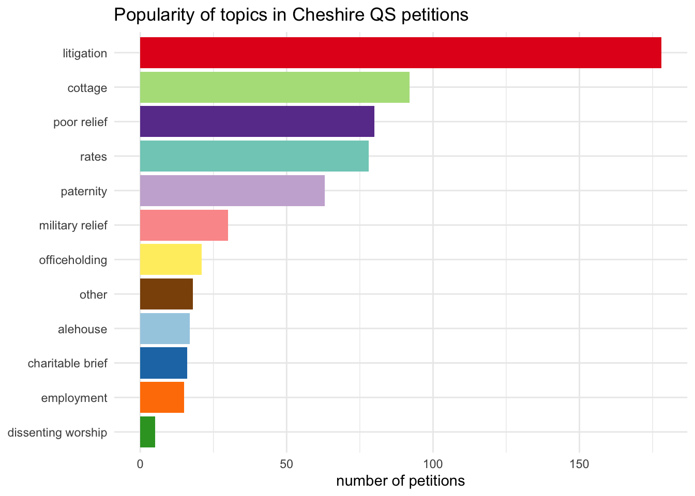

library(tidyverse)# load data package with the cheshire_petitions datalibrary(mindseyedata)# make a custom colour palettetopic_colours <-c("alehouse"="#a6cee3", "charitable brief"="#1f78b4", "cottage"="#b2df8a", "dissenting worship"="#33a02c", "employment"="#ff7f00", "imprisoned debtors"="#fdbf6f", "litigation"="#e31a1c", "military relief"="#fb9a99", "officeholding"="#ffed6f", "other"="#8c510a", "paternity"="#cab2d6", "poor relief"="#6a3d9a", "rates"="#80cdc1")# slightly adjust topics in the petitions# (there's only a single instance of imprisoned debtors in Cheshire)cheshire_petitions <-cheshire_petitions |>mutate(topic =if_else(topic=="imprisoned debtors", "other", topic)) |>select(petition_id, topic, petition_type, response)#cheshire_petitions
Petitioning topics in ggplot
This looks slightly different from the original as I’m only using Cheshire petitions, not the full TPOP set. But the ggplot code is almost identical.
Code
cheshire_petitions |>count(topic) |>mutate(topic=fct_reorder(topic, n)) |>ggplot(aes(x=n, y=topic, fill=topic)) +geom_col() +scale_fill_manual(values = topic_colours) +theme_minimal() +theme(legend.position ="none") +labs(y=NULL, x="number of petitions", title="Popularity of topics in Cheshire QS petitions")

OJS
Here is a neat thing about OJS, compared to R: you don’t have to define data before you use it. Cells (ojs rather than r chunks) can go in any order.
Here’s the petitions data converted to OJS format, though the actual code to make it is a bit further down this post. R would be most unhappy about this state of affairs.
Code
ojsPetitions
There are various ways to get data in formats OJS can use. To convert the cheshire_petitions R data frame needs two steps:
ojs_define() inside an R chunk to pass the data to Observable
transpose() inside an OJS chunk to switch it to the right format for Plot
Code
ojs_define(ojs_petitions = cheshire_petitions)
Code
ojsPetitions =transpose(ojs_petitions)
(I tend to name R objects using snake_case and OJS objects with camelCase, so I’m slightly less likely to get confused when working with both kinds of data in the same document.)
Making the chart
The key features of the bar chart that I want to reproduce in Observable Plot:
horizontal bars
ordered by frequency rather than alphabetically
coloured by topic (using a manually defined palette)
(I also added tooltips, just because I can.)
Code
Plot.plot({marginLeft:100,title:"Popularity of topics in Cheshire QS petitions",x: {grid:true,label:"number of petitions"},y: {grid:true,label:null},color: topicColours,marks: [ Plot.barX(ojsPetitions, Plot.groupY({x:"count"}, {y:"topic",fill:"topic",tip:true,sort: {y:"x",reverse:true} }) ), Plot.ruleX([0]) ]})
notable differences
Both ggplot and Plot often have multiple ways of doing the same thing and I know much less about all the options in Plot, so some differences might be more apparent than real.
For the ggplot, I aggregated the data (dplyr::count()) and reordered it (forcats::fct_reorder()) before starting the ggplot code. I could certainly do the aggregation for Plot beforehand too but I’d need to look up how, and I have absolutely no idea if there’s an equivalent of fct_reorder. It seems easier to do both of those inside the Plot (groupY() and sort).
When using a colour scale, gpplot makes a legend by default and has to be told not to, whereas you have to tell Plot to make one.
The default aspect ratio is clearly very different; I’d need to check how to change that in Plot (and also how to change the title text size). Also, ggplot automatically makes space for long labels but Plot doesn’t, so you have to set a margin.
Finally, I needed to reformat the topic_colours list for the colour palette, into (to me, anyway) a less transparent format. I’ll look into how to wrangle the list properly for Plot.scale(); for now I rewrote it by hand.